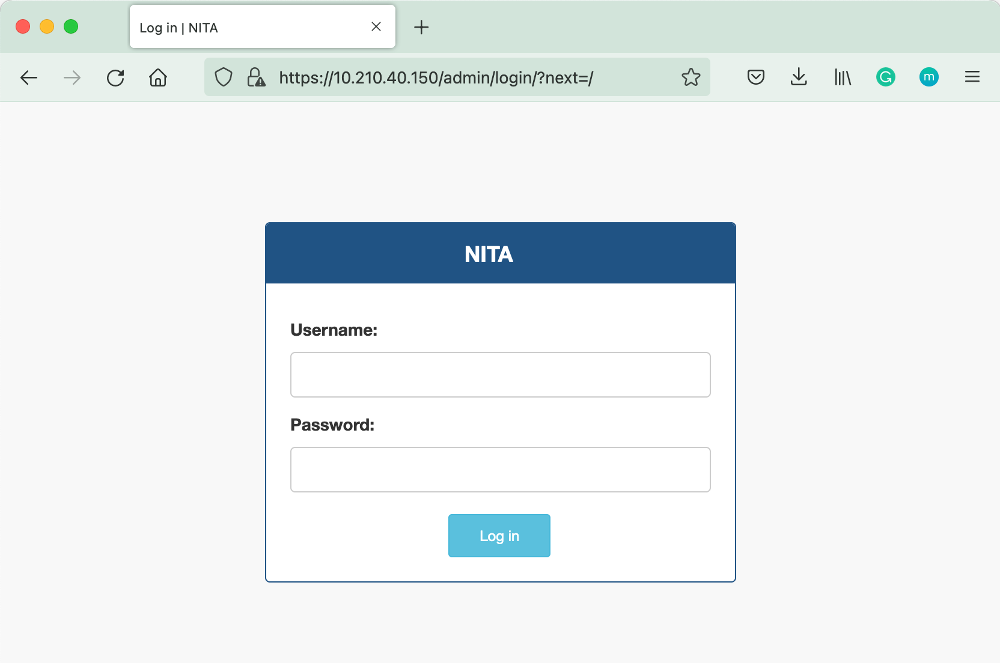
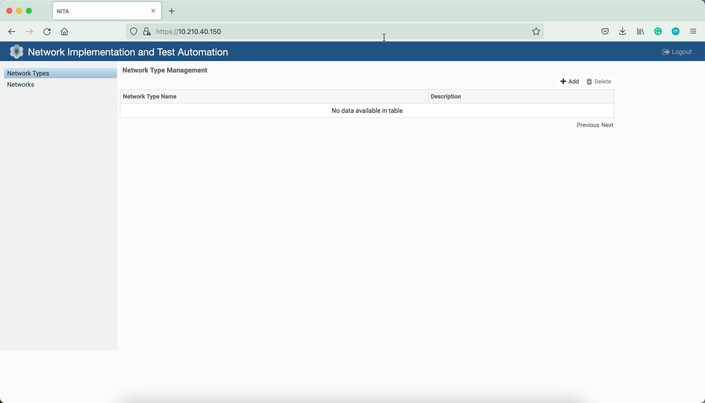
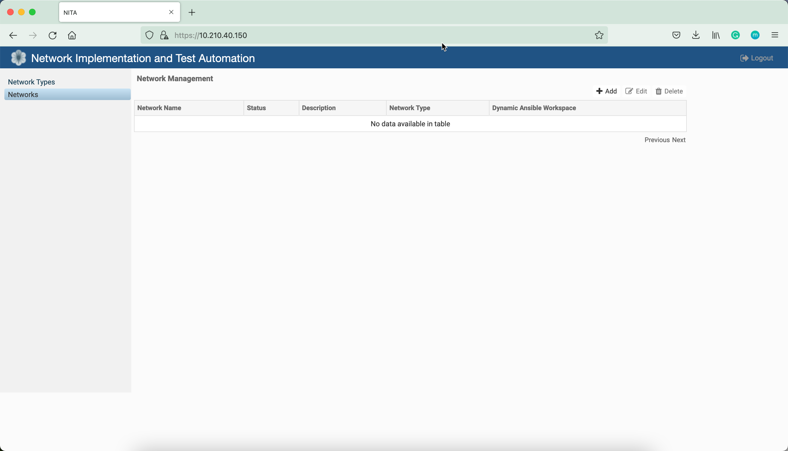
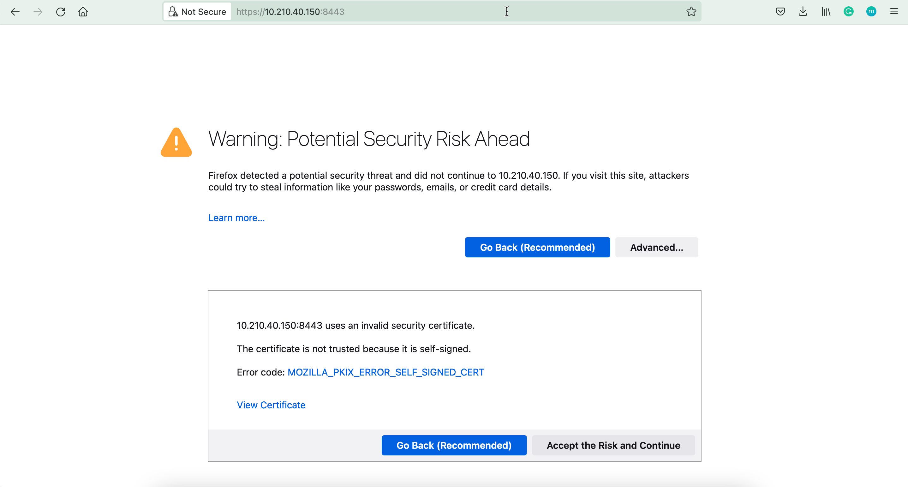
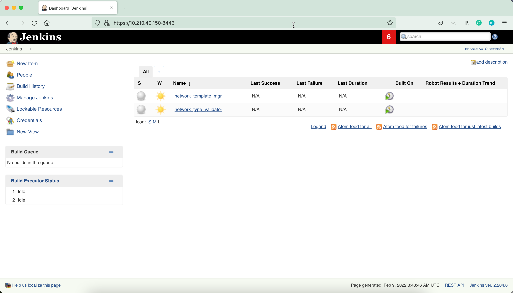

NITA is an open source platform for automating the building and testing of complex networks.
https://github.com/Juniper/nita
The solution consists of several components:
Let's install NITA on a CentOS8 machine.
xxxxxxxxxx[pradeep@nita ~]$ uname -aLinux nita 4.18.0-259.el8.x86_64 #1 SMP Mon Dec 21 21:05:36 UTC 2020 x86_64 x86_64 x86_64 GNU/Linuxxxxxxxxxxx[pradeep@nita ~]$ cat /etc/os-release NAME="CentOS Stream"VERSION="8"ID="centos"ID_LIKE="rhel fedora"VERSION_ID="8"PLATFORM_ID="platform:el8"PRETTY_NAME="CentOS Stream 8"ANSI_COLOR="0;31"CPE_NAME="cpe:/o:centos:centos:8"HOME_URL="https://centos.org/"BUG_REPORT_URL="https://bugzilla.redhat.com/"REDHAT_SUPPORT_PRODUCT="Red Hat Enterprise Linux 8"REDHAT_SUPPORT_PRODUCT_VERSION="CentOS Stream"[pradeep@nita ~]$ NITA depends on docker-ce and docker-compose.
xxxxxxxxxx[pradeep@nita ~]$ sudo yum remove docker \> docker-client \> docker-client-latest \> docker-common \> docker-latest \> docker-latest-logrotate \> docker-logrotate \> docker-engine[sudo] password for pradeep: Modular dependency problems:
Problem 1: conflicting requests - nothing provides module(perl:5.26) needed by module freeradius:3.0:8030020200831192931:1e4bbb35-0.x86_64 Problem 2: conflicting requests - nothing provides module(perl:5.26) needed by module perl-IO-Socket-SSL:2.066:8040020200924212038:1aedcbfe-0.x86_64 Problem 3: conflicting requests - nothing provides module(perl:5.26) needed by module perl-libwww-perl:6.34:8030020200716155257:b967a9a2-0.x86_64No match for argument: dockerNo match for argument: docker-clientNo match for argument: docker-client-latestNo match for argument: docker-commonNo match for argument: docker-latestNo match for argument: docker-latest-logrotateNo match for argument: docker-logrotateNo match for argument: docker-engineNo packages marked for removal.Dependencies resolved.Nothing to do.Complete![pradeep@nita ~]$xxxxxxxxxx[pradeep@nita ~]$ sudo yum install -y yum-utilsCentOS Stream 8 - AppStream 10 kB/s | 4.4 kB 00:00 CentOS Stream 8 - AppStream 8.8 MB/s | 19 MB 00:02 CentOS Stream 8 - BaseOS 12 kB/s | 3.9 kB 00:00 CentOS Stream 8 - BaseOS 8.2 MB/s | 18 MB 00:02 CentOS Stream 8 - Extras 10 kB/s | 3.0 kB 00:00 CentOS Stream 8 - Extras 5.8 kB/s | 17 kB 00:02 Adobe Systems Incorporated 107 kB/s | 2.9 kB 00:00 Extra Packages for Enterprise Linux Modular 8 - x86_64 53 kB/s | 19 kB 00:00 Extra Packages for Enterprise Linux Modular 8 - x86_64 481 kB/s | 979 kB 00:02 Extra Packages for Enterprise Linux 8 - x86_64 46 kB/s | 14 kB 00:00 Extra Packages for Enterprise Linux 8 - x86_64 1.7 MB/s | 11 MB 00:06 google-chrome 10 kB/s | 1.3 kB 00:00 google-chrome 15 kB/s | 3.6 kB 00:00 Visual Studio Code 28 kB/s | 3.0 kB 00:00 Visual Studio Code 3.5 MB/s | 22 MB 00:06 Dependencies resolved.====================================================================================================================================================================== Package Architecture Version Repository Size======================================================================================================================================================================Installing: yum-utils noarch 4.0.21-10.el8 baseos 73 kUpgrading: dnf noarch 4.7.0-7.el8 baseos 544 k dnf-data noarch 4.7.0-7.el8 baseos 155 k dnf-plugins-core noarch 4.0.21-10.el8 baseos 71 k json-c x86_64 0.13.1-3.el8 baseos 41 k libdnf x86_64 0.63.0-7.el8 baseos 701 k libmodulemd x86_64 2.13.0-1.el8 baseos 233 k librepo x86_64 1.14.2-1.el8 baseos 93 k libsolv x86_64 0.7.20-1.el8 baseos 375 k python3-dnf noarch 4.7.0-7.el8 baseos 545 k python3-dnf-plugins-core noarch 4.0.21-10.el8 baseos 230 k python3-hawkey x86_64 0.63.0-7.el8 baseos 116 k python3-libdnf x86_64 0.63.0-7.el8 baseos 778 k python3-librepo x86_64 1.14.2-1.el8 baseos 53 k yum noarch 4.7.0-7.el8 baseos 201 k
Transaction Summary======================================================================================================================================================================Install 1 PackageUpgrade 14 Packages
Total download size: 4.1 MDownloading Packages:(1/15): yum-utils-4.0.21-10.el8.noarch.rpm 252 kB/s | 73 kB 00:00 (2/15): dnf-data-4.7.0-7.el8.noarch.rpm 426 kB/s | 155 kB 00:00 (3/15): dnf-plugins-core-4.0.21-10.el8.noarch.rpm 971 kB/s | 71 kB 00:00 (4/15): json-c-0.13.1-3.el8.x86_64.rpm 553 kB/s | 41 kB 00:00 (5/15): dnf-4.7.0-7.el8.noarch.rpm 1.0 MB/s | 544 kB 00:00 (6/15): libdnf-0.63.0-7.el8.x86_64.rpm 3.1 MB/s | 701 kB 00:00 (7/15): librepo-1.14.2-1.el8.x86_64.rpm 1.2 MB/s | 93 kB 00:00 (8/15): libmodulemd-2.13.0-1.el8.x86_64.rpm 1.5 MB/s | 233 kB 00:00 (9/15): libsolv-0.7.20-1.el8.x86_64.rpm 4.5 MB/s | 375 kB 00:00 (10/15): python3-dnf-4.7.0-7.el8.noarch.rpm 3.5 MB/s | 545 kB 00:00 (11/15): python3-dnf-plugins-core-4.0.21-10.el8.noarch.rpm 1.5 MB/s | 230 kB 00:00 (12/15): python3-hawkey-0.63.0-7.el8.x86_64.rpm 1.5 MB/s | 116 kB 00:00 (13/15): python3-librepo-1.14.2-1.el8.x86_64.rpm 696 kB/s | 53 kB 00:00 (14/15): yum-4.7.0-7.el8.noarch.rpm 2.5 MB/s | 201 kB 00:00 (15/15): python3-libdnf-0.63.0-7.el8.x86_64.rpm 5.0 MB/s | 778 kB 00:00 ----------------------------------------------------------------------------------------------------------------------------------------------------------------------Total 3.6 MB/s | 4.1 MB 00:01 Running transaction checkTransaction check succeeded.Running transaction testTransaction test succeeded.Running transaction Preparing : 1/1 Running scriptlet: librepo-1.14.2-1.el8.x86_64 1/1 Upgrading : librepo-1.14.2-1.el8.x86_64 1/29 Upgrading : libmodulemd-2.13.0-1.el8.x86_64 2/29 Upgrading : libsolv-0.7.20-1.el8.x86_64 3/29 Upgrading : json-c-0.13.1-3.el8.x86_64 4/29 Upgrading : libdnf-0.63.0-7.el8.x86_64 5/29 Upgrading : python3-libdnf-0.63.0-7.el8.x86_64 6/29 Upgrading : python3-hawkey-0.63.0-7.el8.x86_64 7/29 Upgrading : dnf-data-4.7.0-7.el8.noarch 8/29 Upgrading : python3-dnf-4.7.0-7.el8.noarch 9/29 Upgrading : dnf-4.7.0-7.el8.noarch 10/29 Running scriptlet: dnf-4.7.0-7.el8.noarch 10/29 Upgrading : python3-dnf-plugins-core-4.0.21-10.el8.noarch 11/29 Upgrading : dnf-plugins-core-4.0.21-10.el8.noarch 12/29 Installing : yum-utils-4.0.21-10.el8.noarch 13/29 Upgrading : yum-4.7.0-7.el8.noarch 14/29 Upgrading : python3-librepo-1.14.2-1.el8.x86_64 15/29 Cleanup : yum-4.4.2-2.el8.noarch 16/29 Running scriptlet: dnf-4.4.2-2.el8.noarch 17/29 Cleanup : dnf-4.4.2-2.el8.noarch 17/29 Running scriptlet: dnf-4.4.2-2.el8.noarch 17/29 Cleanup : dnf-plugins-core-4.0.18-2.el8.noarch 18/29 Cleanup : python3-dnf-plugins-core-4.0.18-2.el8.noarch 19/29 Cleanup : python3-dnf-4.4.2-2.el8.noarch 20/29 Cleanup : python3-hawkey-0.55.0-1.el8.x86_64 21/29 Cleanup : python3-libdnf-0.55.0-1.el8.x86_64 22/29 Cleanup : libdnf-0.55.0-1.el8.x86_64 23/29 Cleanup : python3-librepo-1.12.0-3.el8.x86_64 24/29 Cleanup : dnf-data-4.4.2-2.el8.noarch 25/29 Cleanup : librepo-1.12.0-3.el8.x86_64 26/29 Cleanup : json-c-0.13.1-0.3.el8.x86_64 27/29 Cleanup : libmodulemd-2.9.4-2.el8.x86_64 28/29 Cleanup : libsolv-0.7.16-1.el8.x86_64 29/29 Running scriptlet: libsolv-0.7.16-1.el8.x86_64 29/29 [/usr/lib/tmpfiles.d/pesign.conf:1] Line references path below legacy directory /var/run/, updating /var/run/pesign → /run/pesign; please update the tmpfiles.d/ drop-in file accordingly.
Verifying : yum-utils-4.0.21-10.el8.noarch 1/29 Verifying : dnf-4.7.0-7.el8.noarch 2/29 Verifying : dnf-4.4.2-2.el8.noarch 3/29 Verifying : dnf-data-4.7.0-7.el8.noarch 4/29 Verifying : dnf-data-4.4.2-2.el8.noarch 5/29 Verifying : dnf-plugins-core-4.0.21-10.el8.noarch 6/29 Verifying : dnf-plugins-core-4.0.18-2.el8.noarch 7/29 Verifying : json-c-0.13.1-3.el8.x86_64 8/29 Verifying : json-c-0.13.1-0.3.el8.x86_64 9/29 Verifying : libdnf-0.63.0-7.el8.x86_64 10/29 Verifying : libdnf-0.55.0-1.el8.x86_64 11/29 Verifying : libmodulemd-2.13.0-1.el8.x86_64 12/29 Verifying : libmodulemd-2.9.4-2.el8.x86_64 13/29 Verifying : librepo-1.14.2-1.el8.x86_64 14/29 Verifying : librepo-1.12.0-3.el8.x86_64 15/29 Verifying : libsolv-0.7.20-1.el8.x86_64 16/29 Verifying : libsolv-0.7.16-1.el8.x86_64 17/29 Verifying : python3-dnf-4.7.0-7.el8.noarch 18/29 Verifying : python3-dnf-4.4.2-2.el8.noarch 19/29 Verifying : python3-dnf-plugins-core-4.0.21-10.el8.noarch 20/29 Verifying : python3-dnf-plugins-core-4.0.18-2.el8.noarch 21/29 Verifying : python3-hawkey-0.63.0-7.el8.x86_64 22/29 Verifying : python3-hawkey-0.55.0-1.el8.x86_64 23/29 Verifying : python3-libdnf-0.63.0-7.el8.x86_64 24/29 Verifying : python3-libdnf-0.55.0-1.el8.x86_64 25/29 Verifying : python3-librepo-1.14.2-1.el8.x86_64 26/29 Verifying : python3-librepo-1.12.0-3.el8.x86_64 27/29 Verifying : yum-4.7.0-7.el8.noarch 28/29 Verifying : yum-4.4.2-2.el8.noarch 29/29 Installed products updated.
Upgraded: dnf-4.7.0-7.el8.noarch dnf-data-4.7.0-7.el8.noarch dnf-plugins-core-4.0.21-10.el8.noarch json-c-0.13.1-3.el8.x86_64 libdnf-0.63.0-7.el8.x86_64 libmodulemd-2.13.0-1.el8.x86_64 librepo-1.14.2-1.el8.x86_64 libsolv-0.7.20-1.el8.x86_64 python3-dnf-4.7.0-7.el8.noarch python3-dnf-plugins-core-4.0.21-10.el8.noarch python3-hawkey-0.63.0-7.el8.x86_64 python3-libdnf-0.63.0-7.el8.x86_64 python3-librepo-1.14.2-1.el8.x86_64 yum-4.7.0-7.el8.noarch
Installed: yum-utils-4.0.21-10.el8.noarch
Complete![pradeep@nita ~]$ xxxxxxxxxx[pradeep@nita ~]$ sudo yum-config-manager \> --add-repo \> https://download.docker.com/linux/centos/docker-ce.repoAdding repo from: https://download.docker.com/linux/centos/docker-ce.repo[pradeep@nita ~]$ xxxxxxxxxx[pradeep@nita ~]$ sudo yum install docker-ce docker-ce-cli containerd.ioDocker CE Stable - x86_64 97 kB/s | 19 kB 00:00 Dependencies resolved.====================================================================================================================================================================== Package Architecture Version Repository Size======================================================================================================================================================================Installing: containerd.io x86_64 1.4.12-3.1.el8 docker-ce-stable 28 M docker-ce x86_64 3:20.10.12-3.el8 docker-ce-stable 22 M docker-ce-cli x86_64 1:20.10.12-3.el8 docker-ce-stable 30 MInstalling dependencies: container-selinux noarch 2:2.170.0-1.module_el8.6.0+954+963caf36 appstream 56 k docker-ce-rootless-extras x86_64 20.10.12-3.el8 docker-ce-stable 4.6 M docker-scan-plugin x86_64 0.12.0-3.el8 docker-ce-stable 3.7 M fuse-overlayfs x86_64 1.7.1-1.module_el8.6.0+926+8bef8ae7 appstream 73 k fuse3 x86_64 3.2.1-12.el8 baseos 50 k fuse3-libs x86_64 3.2.1-12.el8 baseos 94 k libcgroup x86_64 0.41-19.el8 baseos 70 k libslirp x86_64 4.4.0-1.module_el8.6.0+926+8bef8ae7 appstream 70 k slirp4netns x86_64 1.1.8-1.module_el8.6.0+926+8bef8ae7 appstream 51 kEnabling module streams: container-tools rhel8
Transaction Summary======================================================================================================================================================================Install 12 Packages
Total download size: 90 MInstalled size: 378 MIs this ok [y/N]: yDownloading Packages:(1/12): container-selinux-2.170.0-1.module_el8.6.0+954+963caf36.noarch.rpm 220 kB/s | 56 kB 00:00 (2/12): libslirp-4.4.0-1.module_el8.6.0+926+8bef8ae7.x86_64.rpm 271 kB/s | 70 kB 00:00 (3/12): fuse-overlayfs-1.7.1-1.module_el8.6.0+926+8bef8ae7.x86_64.rpm 277 kB/s | 73 kB 00:00 (4/12): slirp4netns-1.1.8-1.module_el8.6.0+926+8bef8ae7.x86_64.rpm 773 kB/s | 51 kB 00:00 (5/12): fuse3-3.2.1-12.el8.x86_64.rpm 171 kB/s | 50 kB 00:00 (6/12): libcgroup-0.41-19.el8.x86_64.rpm 239 kB/s | 70 kB 00:00 (7/12): fuse3-libs-3.2.1-12.el8.x86_64.rpm 260 kB/s | 94 kB 00:00 (8/12): docker-ce-20.10.12-3.el8.x86_64.rpm 22 MB/s | 22 MB 00:01 (9/12): containerd.io-1.4.12-3.1.el8.x86_64.rpm 19 MB/s | 28 MB 00:01 (10/12): docker-ce-rootless-extras-20.10.12-3.el8.x86_64.rpm 8.7 MB/s | 4.6 MB 00:00 (11/12): docker-ce-cli-20.10.12-3.el8.x86_64.rpm 16 MB/s | 30 MB 00:01 (12/12): docker-scan-plugin-0.12.0-3.el8.x86_64.rpm 7.1 MB/s | 3.7 MB 00:00 ----------------------------------------------------------------------------------------------------------------------------------------------------------------------Total 32 MB/s | 90 MB 00:02 Docker CE Stable - x86_64 20 kB/s | 1.6 kB 00:00 Importing GPG key 0x621E9F35: Userid : "Docker Release (CE rpm) <docker@docker.com>" Fingerprint: 060A 61C5 1B55 8A7F 742B 77AA C52F EB6B 621E 9F35 From : https://download.docker.com/linux/centos/gpgIs this ok [y/N]: yKey imported successfullyRunning transaction checkTransaction check succeeded.Running transaction testTransaction test succeeded.Running transaction Preparing : 1/1 Installing : docker-scan-plugin-0.12.0-3.el8.x86_64 1/12 Running scriptlet: docker-scan-plugin-0.12.0-3.el8.x86_64 1/12 Installing : docker-ce-cli-1:20.10.12-3.el8.x86_64 2/12 Running scriptlet: docker-ce-cli-1:20.10.12-3.el8.x86_64 2/12 Running scriptlet: container-selinux-2:2.170.0-1.module_el8.6.0+954+963caf36.noarch 3/12 Installing : container-selinux-2:2.170.0-1.module_el8.6.0+954+963caf36.noarch 3/12 Running scriptlet: container-selinux-2:2.170.0-1.module_el8.6.0+954+963caf36.noarch 3/12 Installing : containerd.io-1.4.12-3.1.el8.x86_64 4/12 Running scriptlet: containerd.io-1.4.12-3.1.el8.x86_64 4/12 Running scriptlet: libcgroup-0.41-19.el8.x86_64 5/12 Installing : libcgroup-0.41-19.el8.x86_64 5/12 Running scriptlet: libcgroup-0.41-19.el8.x86_64 5/12 Installing : fuse3-libs-3.2.1-12.el8.x86_64 6/12 Running scriptlet: fuse3-libs-3.2.1-12.el8.x86_64 6/12 Installing : fuse3-3.2.1-12.el8.x86_64 7/12 Installing : fuse-overlayfs-1.7.1-1.module_el8.6.0+926+8bef8ae7.x86_64 8/12 Running scriptlet: fuse-overlayfs-1.7.1-1.module_el8.6.0+926+8bef8ae7.x86_64 8/12 Installing : libslirp-4.4.0-1.module_el8.6.0+926+8bef8ae7.x86_64 9/12 Installing : slirp4netns-1.1.8-1.module_el8.6.0+926+8bef8ae7.x86_64 10/12 Installing : docker-ce-rootless-extras-20.10.12-3.el8.x86_64 11/12 Running scriptlet: docker-ce-rootless-extras-20.10.12-3.el8.x86_64 11/12 Installing : docker-ce-3:20.10.12-3.el8.x86_64 12/12 Running scriptlet: docker-ce-3:20.10.12-3.el8.x86_64 12/12 Running scriptlet: container-selinux-2:2.170.0-1.module_el8.6.0+954+963caf36.noarch 12/12 Running scriptlet: docker-ce-3:20.10.12-3.el8.x86_64 12/12 Verifying : container-selinux-2:2.170.0-1.module_el8.6.0+954+963caf36.noarch 1/12 Verifying : fuse-overlayfs-1.7.1-1.module_el8.6.0+926+8bef8ae7.x86_64 2/12 Verifying : libslirp-4.4.0-1.module_el8.6.0+926+8bef8ae7.x86_64 3/12 Verifying : slirp4netns-1.1.8-1.module_el8.6.0+926+8bef8ae7.x86_64 4/12 Verifying : fuse3-3.2.1-12.el8.x86_64 5/12 Verifying : fuse3-libs-3.2.1-12.el8.x86_64 6/12 Verifying : libcgroup-0.41-19.el8.x86_64 7/12 Verifying : containerd.io-1.4.12-3.1.el8.x86_64 8/12 Verifying : docker-ce-3:20.10.12-3.el8.x86_64 9/12 Verifying : docker-ce-cli-1:20.10.12-3.el8.x86_64 10/12 Verifying : docker-ce-rootless-extras-20.10.12-3.el8.x86_64 11/12 Verifying : docker-scan-plugin-0.12.0-3.el8.x86_64 12/12 Installed products updated.
Installed: container-selinux-2:2.170.0-1.module_el8.6.0+954+963caf36.noarch containerd.io-1.4.12-3.1.el8.x86_64 docker-ce-3:20.10.12-3.el8.x86_64 docker-ce-cli-1:20.10.12-3.el8.x86_64 docker-ce-rootless-extras-20.10.12-3.el8.x86_64 docker-scan-plugin-0.12.0-3.el8.x86_64 fuse-overlayfs-1.7.1-1.module_el8.6.0+926+8bef8ae7.x86_64 fuse3-3.2.1-12.el8.x86_64 fuse3-libs-3.2.1-12.el8.x86_64 libcgroup-0.41-19.el8.x86_64 libslirp-4.4.0-1.module_el8.6.0+926+8bef8ae7.x86_64 slirp4netns-1.1.8-1.module_el8.6.0+926+8bef8ae7.x86_64
Complete![pradeep@nita ~]$ Install Docker Compose
xxxxxxxxxx[pradeep@nita ~]$ sudo curl -L "https://github.com/docker/compose/releases/download/1.29.2/docker-compose-$(uname -s)-$(uname -m)" -o /usr/local/bin/docker-compose % Total % Received % Xferd Average Speed Time Time Time Current Dload Upload Total Spent Left Speed100 664 100 664 0 0 10060 0 --:--:-- --:--:-- --:--:-- 10060100 12.1M 100 12.1M 0 0 10.7M 0 0:00:01 0:00:01 --:--:-- 7067kxxxxxxxxxx[pradeep@nita ~]$ sudo chmod +x /usr/local/bin/docker-composeVerify Docker Compose
xxxxxxxxxx[pradeep@nita ~]$ docker-compose --versiondocker-compose version 1.29.2, build 5becea4c[pradeep@nita ~]$ xxxxxxxxxx[pradeep@nita ~]$ sudo groupadd dockergroupadd: group 'docker' already exists[pradeep@nita ~]$ sudo usermod -aG docker $USER[pradeep@nita ~]$ exitlogoutRelogin
xxxxxxxxxx[pradeep@nita ~]$ newgrp docker [pradeep@nita ~]$ docker run hello-worlddocker: Cannot connect to the Docker daemon at unix:///var/run/docker.sock. Is the docker daemon running?.See 'docker run --help'.
Configure Docker to start on boot
xxxxxxxxxx[pradeep@nita ~]$ sudo systemctl enable docker.service[sudo] password for lab: Created symlink /etc/systemd/system/multi-user.target.wants/docker.service → /usr/lib/systemd/system/docker.service.[pradeep@nita ~]$ sudo systemctl enable containerd.serviceCreated symlink /etc/systemd/system/multi-user.target.wants/containerd.service → /usr/lib/systemd/system/containerd.service.[pradeep@nita ~]$ sudo systemctl daemon-reload[pradeep@nita ~]$ sudo systemctl restart docker.serviceVerify that you can run docker commands without sudo.
xxxxxxxxxx
[pradeep@nita ~]$ docker run hello-worldUnable to find image 'hello-world:latest' locallylatest: Pulling from library/hello-world2db29710123e: Pull complete Digest: sha256:507ecde44b8eb741278274653120c2bf793b174c06ff4eaa672b713b3263477bStatus: Downloaded newer image for hello-world:latest
Hello from Docker!This message shows that your installation appears to be working correctly.
To generate this message, Docker took the following steps: 1. The Docker client contacted the Docker daemon. 2. The Docker daemon pulled the "hello-world" image from the Docker Hub. (amd64) 3. The Docker daemon created a new container from that image which runs the executable that produces the output you are currently reading. 4. The Docker daemon streamed that output to the Docker client, which sent it to your terminal.
To try something more ambitious, you can run an Ubuntu container with: $ docker run -it ubuntu bash
Share images, automate workflows, and more with a free Docker ID: https://hub.docker.com/
For more examples and ideas, visit: https://docs.docker.com/get-started/
[pradeep@nita ~]$
NITA-CLI requires jq for some of its features. For the instalation of this library refer to: https://stedolan.github.io/jq/download/
xxxxxxxxxx[pradeep@nita ~]$ sudo dnf install jqLast metadata expiration check: 0:12:01 ago on Tue 08 Feb 2022 06:44:31 PM PST.Package jq-1.5-12.el8.x86_64 is already installed.Dependencies resolved.====================================================================================================================================================================== Package Architecture Version Repository Size======================================================================================================================================================================Upgrading: jq x86_64 1.6-3.el8 appstream 202 k
Transaction Summary======================================================================================================================================================================Upgrade 1 Package
Total download size: 202 kIs this ok [y/N]: yDownloading Packages:jq-1.6-3.el8.x86_64.rpm 528 kB/s | 202 kB 00:00 ----------------------------------------------------------------------------------------------------------------------------------------------------------------------Total 247 kB/s | 202 kB 00:00 Running transaction checkTransaction check succeeded.Running transaction testTransaction test succeeded.Running transaction Preparing : 1/1 Upgrading : jq-1.6-3.el8.x86_64 1/2 Cleanup : jq-1.5-12.el8.x86_64 2/2 Running scriptlet: jq-1.5-12.el8.x86_64 2/2 Verifying : jq-1.6-3.el8.x86_64 1/2 Verifying : jq-1.5-12.el8.x86_64 2/2 Installed products updated.
Upgraded: jq-1.6-3.el8.x86_64
Complete![pradeep@nita ~]$ Once you have docker-ce and docker-compose installed do the following steps as root:
xxxxxxxxxx[pradeep@nita ~]$ sudo su -[root@nita ~]# git clone https://github.com/Juniper/nita-webappCloning into 'nita-webapp'...remote: Enumerating objects: 1307, done.remote: Counting objects: 100% (1307/1307), done.remote: Compressing objects: 100% (772/772), done.remote: Total 1307 (delta 680), reused 976 (delta 418), pack-reused 0Receiving objects: 100% (1307/1307), 1.37 MiB | 3.86 MiB/s, done.Resolving deltas: 100% (680/680), done.xxxxxxxxxx[root@nita ~]# cd nita-webapp/[root@nita nita-webapp]# git checkout 21.7Branch '21.7' set up to track remote branch '21.7' from 'origin'.Switched to a new branch '21.7'[root@nita nita-webapp]# mkdir nginx/certificates[root@nita nita-webapp]# ls nginx/certificates nginx.conf README[root@nita nita-webapp]# openssl req -batch -x509 -nodes -days 365 -newkey rsa:2048 -keyout nginx/certificates/nginx-certificate-key.key -out nginx/certificates/nginx-certificate.crtGenerating a RSA private key....................................+++++.......................+++++writing new private key to 'nginx/certificates/nginx-certificate-key.key'-----xxxxxxxxxx[root@nita nita-webapp]# docker network create nita-network38912d25f9e23eb8fb9731a00e85434c7d074b3c65946a801ecb490b7e9bc628xxxxxxxxxx[root@nita nita-webapp]# docker-compose up -dCreating volume "nita-webapp_mariadb" with default driverPulling db (mariadb:10.4.12)...10.4.12: Pulling from library/mariadb23884877105a: Pull completebc38caa0f5b9: Pull complete2910811b6c42: Pull complete36505266dcc6: Pull completee69dcc78e96e: Pull complete222f44c5392d: Pull completeefc64ea97b9c: Pull complete9912a149de6b: Pull complete7ef6cf5b5697: Pull complete8a05be3688e0: Pull completec09ffdc1b660: Pull complete2eb7fe288fc8: Pull completeb41d1cc4d40f: Pull completea92376500910: Pull completeDigest: sha256:379f3689cfcd53fd561c1aa2aea0a336a2362c9d31306528228321344a9cf979Status: Downloaded newer image for mariadb:10.4.12Pulling webapp (juniper/nita-webapp:21.7-1)...21.7-1: Pulling from juniper/nita-webapp33847f680f63: Pull completee8124950597e: Pull completecc636c24d49d: Pull complete1fbf3ac5d4b6: Pull complete37cfb6b6e136: Pull completed996ef0c25b6: Pull completef1be64f36296: Pull completea701b0a1d129: Pull complete640881770274: Pull complete820894dfb52d: Pull complete7efe19707580: Pull complete12aa8c17c50c: Pull completee5f30a833c04: Pull complete120846da3112: Pull complete76e6a884e66b: Pull completed16ecbc89094: Pull completeDigest: sha256:79f4588060c6e9970ec1f786cdd893451962e9c17de9231bcb1cdda9d2441b05Status: Downloaded newer image for juniper/nita-webapp:21.7-1Pulling proxy (nginx:1.17.9)...1.17.9: Pulling from library/nginx123275d6e508: Pull complete9a5d769f04f8: Pull completefaad4f49180d: Pull completeDigest: sha256:88ea86df324b03b3205cbf4ca0d999143656d0a3394675630e55e49044d38b50Status: Downloaded newer image for nginx:1.17.9Creating nita-webapp_db_1 ... doneCreating nita-webapp_webapp_1 ... doneCreating nita-webapp_proxy_1 ... done[root@nita nita-webapp]# In order for NITA to work you also need to run jenkins: First , Install openjdk to get "keytool" which is required later in this step.
xxxxxxxxxx[root@nita nita-webapp]# dnf install java-11-openjdk-devel.x86_64Last metadata expiration check: 0:22:10 ago on Tue 08 Feb 2022 06:44:31 PM PST.Dependencies resolved.====================================================================================================================================================================== Package Architecture Version Repository Size======================================================================================================================================================================Installing: java-11-openjdk-devel x86_64 1:11.0.14.0.9-2.el8_5 appstream 3.4 MUpgrading: copy-jdk-configs noarch 4.0-2.el8 appstream 31 k tzdata-java noarch 2021e-1.el8 appstream 191 kInstalling dependencies: java-11-openjdk x86_64 1:11.0.14.0.9-2.el8_5 appstream 267 k java-11-openjdk-headless x86_64 1:11.0.14.0.9-2.el8_5 appstream 40 M
Transaction Summary======================================================================================================================================================================Install 3 PackagesUpgrade 2 Packages
Total download size: 43 MIs this ok [y/N]: yDownloading Packages:(1/5): java-11-openjdk-11.0.14.0.9-2.el8_5.x86_64.rpm 599 kB/s | 267 kB 00:00 (2/5): copy-jdk-configs-4.0-2.el8.noarch.rpm 468 kB/s | 31 kB 00:00 (3/5): tzdata-java-2021e-1.el8.noarch.rpm 992 kB/s | 191 kB 00:00 (4/5): java-11-openjdk-devel-11.0.14.0.9-2.el8_5.x86_64.rpm 956 kB/s | 3.4 MB 00:03 (5/5): java-11-openjdk-headless-11.0.14.0.9-2.el8_5.x86_64.rpm 1.1 MB/s | 40 MB 00:36 ----------------------------------------------------------------------------------------------------------------------------------------------------------------------Total 1.2 MB/s | 43 MB 00:36 Running transaction checkTransaction check succeeded.Running transaction testTransaction test succeeded.Running transaction Running scriptlet: copy-jdk-configs-4.0-2.el8.noarch 1/1 Running scriptlet: java-11-openjdk-headless-1:11.0.14.0.9-2.el8_5.x86_64 1/1 Preparing : 1/1 Upgrading : tzdata-java-2021e-1.el8.noarch 1/7 Upgrading : copy-jdk-configs-4.0-2.el8.noarch 2/7 Installing : java-11-openjdk-headless-1:11.0.14.0.9-2.el8_5.x86_64 3/7 Running scriptlet: java-11-openjdk-headless-1:11.0.14.0.9-2.el8_5.x86_64 3/7 Installing : java-11-openjdk-1:11.0.14.0.9-2.el8_5.x86_64 4/7 Running scriptlet: java-11-openjdk-1:11.0.14.0.9-2.el8_5.x86_64 4/7 Installing : java-11-openjdk-devel-1:11.0.14.0.9-2.el8_5.x86_64 5/7 Running scriptlet: java-11-openjdk-devel-1:11.0.14.0.9-2.el8_5.x86_64 5/7 Cleanup : tzdata-java-2020f-1.el8.noarch 6/7 Cleanup : copy-jdk-configs-3.7-4.el8.noarch 7/7 Running scriptlet: copy-jdk-configs-4.0-2.el8.noarch 7/7 Running scriptlet: java-11-openjdk-1:11.0.14.0.9-2.el8_5.x86_64 7/7 Running scriptlet: java-11-openjdk-devel-1:11.0.14.0.9-2.el8_5.x86_64 7/7 Running scriptlet: copy-jdk-configs-3.7-4.el8.noarch 7/7 Verifying : java-11-openjdk-1:11.0.14.0.9-2.el8_5.x86_64 1/7 Verifying : java-11-openjdk-devel-1:11.0.14.0.9-2.el8_5.x86_64 2/7 Verifying : java-11-openjdk-headless-1:11.0.14.0.9-2.el8_5.x86_64 3/7 Verifying : copy-jdk-configs-4.0-2.el8.noarch 4/7 Verifying : copy-jdk-configs-3.7-4.el8.noarch 5/7 Verifying : tzdata-java-2021e-1.el8.noarch 6/7 Verifying : tzdata-java-2020f-1.el8.noarch 7/7 Installed products updated.
Upgraded: copy-jdk-configs-4.0-2.el8.noarch tzdata-java-2021e-1.el8.noarch Installed: java-11-openjdk-1:11.0.14.0.9-2.el8_5.x86_64 java-11-openjdk-devel-1:11.0.14.0.9-2.el8_5.x86_64 java-11-openjdk-headless-1:11.0.14.0.9-2.el8_5.x86_64
Complete![root@nita nita-webapp]# xxxxxxxxxx[root@nita ~]# git clone https://github.com/Juniper/nita-jenkinsCloning into 'nita-jenkins'...remote: Enumerating objects: 508, done.remote: Counting objects: 100% (508/508), done.remote: Compressing objects: 100% (326/326), done.remote: Total 508 (delta 357), reused 281 (delta 146), pack-reused 0Receiving objects: 100% (508/508), 65.96 KiB | 865.00 KiB/s, done.Resolving deltas: 100% (357/357), done.xxxxxxxxxx[root@nita ~]# cd nita-jenkins/[root@nita nita-jenkins]# git checkout 21.7Branch '21.7' set up to track remote branch '21.7' from 'origin'.Switched to a new branch '21.7'[root@nita nita-jenkins]# mkdir certificates[root@nita nita-jenkins]# keytool -genkey -keyalg RSA -alias selfsigned -keystore certificates/jenkins_keystore.jks -keypass nita123 -storepass nita123 -keysize 4096 -dname "cn=, ou=, o=, l=, st=, c="
Warning:The JKS keystore uses a proprietary format. It is recommended to migrate to PKCS12 which is an industry standard format using "keytool -importkeystore -srckeystore certificates/jenkins_keystore.jks -destkeystore certificates/jenkins_keystore.jks -deststoretype pkcs12".xxxxxxxxxx[root@nita nita-jenkins]# docker-compose up -dCreating volume "nita-jenkins_jenkins_home" with default driverPulling jenkins (juniper/nita-jenkins:21.7-1)...21.7-1: Pulling from juniper/nita-jenkins3192219afd04: Pull complete17c160265e75: Pull completecc4fe40d0e61: Pull complete9d647f502a07: Pull completed108b8c498aa: Pull complete1bfe918b8aa5: Pull completedafa1a7c0751: Pull complete3874657ed689: Pull complete900f4e90d17c: Pull completee6f13970353c: Pull complete59a3833cea35: Pull complete66a2588a0c52: Pull completecc3ba68dbb56: Pull complete784d843a12a2: Pull completec2487964e775: Pull complete4ffb00d8da1a: Pull completeea5eb5e32858: Pull complete17d5f381fda6: Pull complete04194c7d9516: Pull completee6b978e93306: Pull complete2434edba705d: Pull complete28bd5f877636: Pull complete6c92d1a74f8b: Pull completec45170ff070c: Pull complete9190da830500: Pull completec16cbcf0a4de: Pull completea7b376db3466: Pull completeDigest: sha256:b4f31d30f353c63c9665019eec5dfde14c071d0462bdc9866d77a5ae540fbd7aStatus: Downloaded newer image for juniper/nita-jenkins:21.7-1Creating nita-jenkins_jenkins_1 ... done[root@nita nita-jenkins]# In order to get nita-cmd scripts working on a docker-compose based installation (do this in the same directory where you cloned jenkins and the webapp):
xxxxxxxxxx[root@nita nita-jenkins]# cd[root@nita ~]# sudo bash[root@nita ~]# cd nita-webapp[root@nita nita-webapp]# cd nita-cmd && bash install.sh[root@nita nita-cmd]# cd cli_scripts && install -m 0755 * /usr/local/binbash: cd: cli_scripts: No such file or directory[root@nita nita-cmd]# lsbash_completion.d cli_runner install.sh packaging packaging_redhat README.md scripts[root@nita nita-cmd]# ls scripts/nita-cmd_cli_version nita-cmd_containers_ls_help nita-cmd_images_ls nita-cmd_images_versions_help nita-cmd_license nita-cmd_stats_helpnita-cmd_cli_version_help nita-cmd_containers_versions nita-cmd_images_ls_help nita-cmd_ips nita-cmd_license_helpnita-cmd_containers_ls nita-cmd_containers_versions_help nita-cmd_images_versions nita-cmd_ips_help nita-cmd_stats[root@nita nita-cmd]# cd scripts && install -m 0755 * /usr/local/bin[root@nita scripts]# cd ..[root@nita nita-cmd]# lsbash_completion.d cli_runner install.sh packaging packaging_redhat README.md scripts
[root@nita nita-cmd]# cd ..[root@nita nita-webapp]# cd ..[root@nita ~]# cd nita-jenkins[root@nita nita-jenkins]# lsbackup_script build_container.sh certificates docker-compose.yml LICENSE.txt packaging plugins.txt requirements.txt write_yaml_files.pybasic-security.groovy BUILD.md cli_scripts Dockerfile NOTICES.txt packaging_redhat README.md VERSION.txt[root@nita nita-jenkins]# cd cli_scripts && install -m 0755 * /usr/local/bin[root@nita cli_scripts]# cd ..[root@nita nita-jenkins]# cd ..[root@nita ~]# Install Ansible
xxxxxxxxxx[root@nita ~]# git clone https://github.com/Juniper/nita-ansibleCloning into 'nita-ansible'...remote: Enumerating objects: 637, done.remote: Counting objects: 100% (637/637), done.remote: Compressing objects: 100% (383/383), done.remote: Total 637 (delta 271), reused 499 (delta 162), pack-reused 0Receiving objects: 100% (637/637), 90.99 KiB | 8.27 MiB/s, done.Resolving deltas: 100% (271/271), done.[root@nita ~]# cd nita-ansible[root@nita nita-ansible]# git checkout 21.7Branch '21.7' set up to track remote branch '21.7' from 'origin'.Switched to a new branch '21.7'[root@nita nita-ansible]# ( cd cli_scripts && install -m 0755 * /usr/local/bin )[root@nita nita-ansible]# cd ..[root@nita ~]# Install Robot Framework
xxxxxxxxxx[root@nita ~]# git clone https://github.com/Juniper/nita-robotCloning into 'nita-robot'...remote: Enumerating objects: 361, done.remote: Counting objects: 100% (361/361), done.remote: Compressing objects: 100% (206/206), done.remote: Total 361 (delta 142), reused 297 (delta 89), pack-reused 0Receiving objects: 100% (361/361), 60.53 KiB | 12.10 MiB/s, done.Resolving deltas: 100% (142/142), done.[root@nita ~]# cd nita-robot/[root@nita nita-robot]# git checkout 21.7Branch '21.7' set up to track remote branch '21.7' from 'origin'.Switched to a new branch '21.7'[root@nita nita-robot]# ( cd cli_scripts && install -m 0755 * /usr/local/bin )[root@nita nita-robot]# cd ..[root@nita ~]# exec bash[root@nita ~]# Edit $HOME/.profile and add the following lines, then restart your shell to pick up the changes:
xxxxxxxxxx[root@nita ~]# cat $HOME/.profileexport NITAWEBAPPDIR=$HOME/nita-webappexport NITAJENKINSDIR=$HOME/nita-jenkins
[root@nita ~]# Install YAML to Excel
xxxxxxxxxx[root@nita ~]# git clone https://github.com/Juniper/nita-yaml-to-excelCloning into 'nita-yaml-to-excel'...remote: Enumerating objects: 209, done.remote: Counting objects: 100% (209/209), done.remote: Compressing objects: 100% (122/122), done.remote: Total 209 (delta 92), reused 137 (delta 51), pack-reused 0Receiving objects: 100% (209/209), 57.41 KiB | 5.22 MiB/s, done.Resolving deltas: 100% (92/92), done.[root@nita ~]#xxxxxxxxxx[root@nita ~]# pip3 install ./nita-yaml-to-excelWARNING: Running pip install with root privileges is generally not a good idea. Try `pip3 install --user` instead.Processing ./nita-yaml-to-excelRequirement already satisfied: PyYAML in /usr/local/lib64/python3.6/site-packages (from yaml-to-excel==21.7.0)Collecting openpyxl (from yaml-to-excel==21.7.0) Downloading https://files.pythonhosted.org/packages/1c/a6/8ce4d2ef2c29be3235c08bb00e0b81e29d38ebc47d82b17af681bf662b74/openpyxl-3.0.9-py2.py3-none-any.whl (242kB) 100% |████████████████████████████████| 245kB 3.9MB/s Collecting et-xmlfile (from openpyxl->yaml-to-excel==21.7.0) Downloading https://files.pythonhosted.org/packages/96/c2/3dd434b0108730014f1b96fd286040dc3bcb70066346f7e01ec2ac95865f/et_xmlfile-1.1.0-py3-none-any.whlInstalling collected packages: et-xmlfile, openpyxl, yaml-to-excel Running setup.py install for yaml-to-excel ... doneSuccessfully installed et-xmlfile-1.1.0 openpyxl-3.0.9 yaml-to-excel-21.7.0[root@nita ~]# Finally you must set the group on the project directory to be 1000 (for jenkins inside the container):
xxxxxxxxxx
xxxxxxxxxx[root@nita ~]# chgrp 1000 /var/nita_project[root@nita ~]# NITA Web inteface can be accessed at X.X.X.X:443 Jenkins Web inteface can be accessed at X.X.X.X:8443
As we are using a self-signed certificate, first time opening the web interface, you have to accept the risk and install certificate.

Login as vagrant user with password vagrant123. You will see the NITA dashboard with two menu options: Network Types and Networks.

Click on the Networks option. Currently no data available as this is a fresh installation.

Similarly, access the Jenkins page, by clicking Advanced, then click Accept the risk and continue.

Upon login, the Dashboard will be displayed. You will see two builds: network_template_mgr and network_type_validator. Both of them were never run, as this is a fresh installation.

In the next part, we will take a look at how to put this NITA into action by automating the build and test phases of our network.